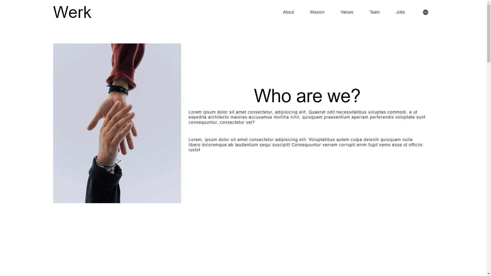
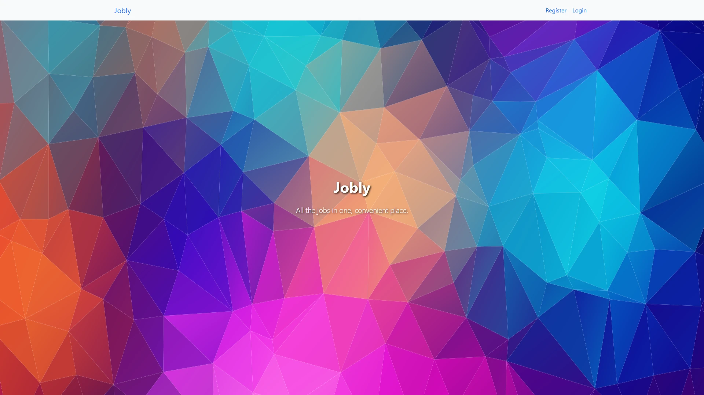
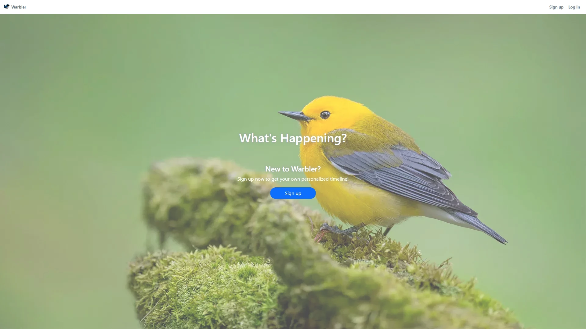

About
Hi, my name is Chris. I have a background in biology and previously I was involved in commercial DNA
sequencing and related services. 🧬 I was introduced to software development when I became
interested in the software that was used in data analysis and collection. From there I started
learning to code on the side and became interested in solving problems in other platforms.
Languages
Javascript | Typescript | Python | SQL | HTML | CSS
Technologies, Frameworks & Other
Node | Express | React | Flask | PostgreSQL | MySQL | Mongodb | Redis | Git | Data Structures &
Algorithms
Projects
Werk

A demo of a simple company website for a fictional company/organization with localization for
french and english. Full stack Typescript
application built with Node, Express, and React.
Live
|
Code
Jobly

A mock employment website where users can find companies/jobs and apply. Full stack Javascript
application built with Node, Express, PostgreSQL and React.
Code
Warbler

Warbler is a Twitter clone built with Python, Flask, SQLAlchemy, and PostgreSQL. A traditional
server-side rendered application using Jinja.
Live
|
Code
Contact
You can reach me at cli3338198@gmail.com